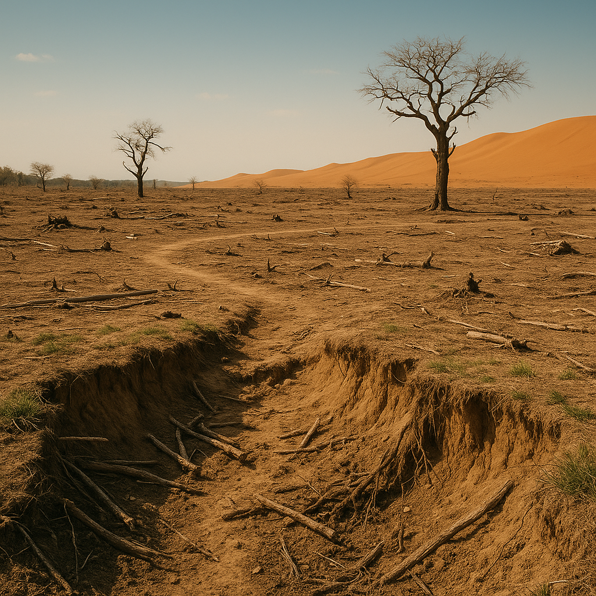

يؤدي القطع الجائر للأشجار إلى تقليص الرقعة الخضراء مما يؤثر على التنوع البيولوجي ويزيد من ظاهرة التصحر.
يؤدي إزالة الأشجار إلى تعرية التربة وفقدان المواد العضوية الضرورية لنمو النبات.
مع قلة الأشجار يتراجع إنتاج الأكسجين في الجو ويزداد ثاني أكسيد الكربون مما يخل بتوازن الهواء.
تقل قدرة الأرض على امتصاص المياه بدون جذور النباتات، مما يؤدي إلى انخفاض منسوب المياه الجوفية.
الأشجار تمتص الغبار وتخفف من تلوث الهواء، وغيابها يؤدي إلى ازدياد الغبار وانتشاره في البيئة.
تقل قدرة التربة على امتصاص المياه دون النباتات، مما يرفع من احتمالية حدوث سيول مدمرة في المناطق المتأثرة.
